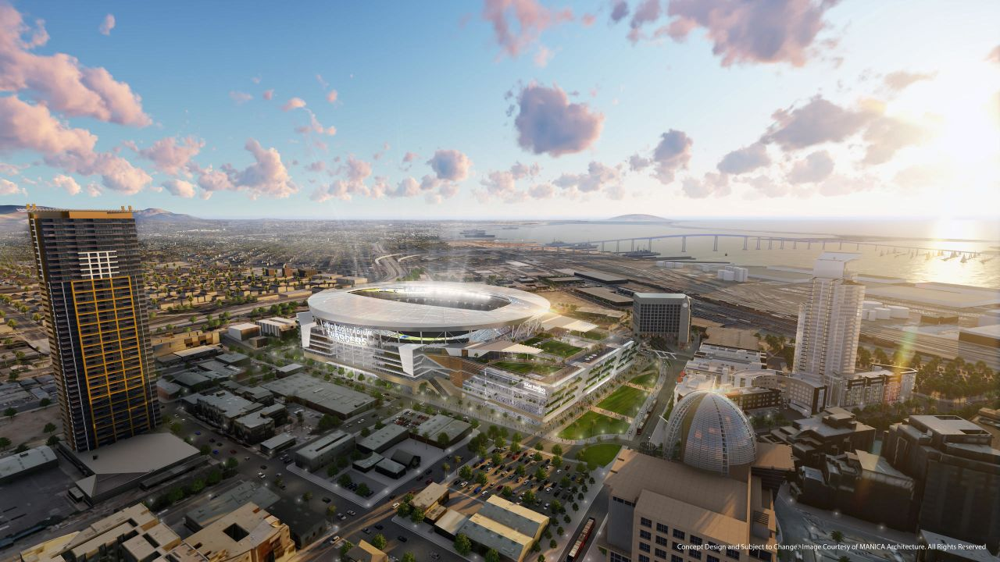

The new home of the San Diego Chargers is a cutting-edge facility designed for the ultimate fan experience. Located next to the iconic Petco Park, this modern stadium combines state-of-the-art amenities with a vibrant, fan-friendly atmosphere. This stadium will be the epicenter of Chargers football for years to come!
Stadium Name: The Chargers Stadium at Petco Park
Capacity: 65,000 seats
Opening Date: September 2025 (Simulated)
Location: Adjacent to Petco Park, San Diego, CA 92101
The fan experience at the new stadium will be second to none. Whether you’re attending a game or enjoying a special event, the stadium is designed to provide an immersive and interactive experience:
Our new home is designed with sustainability in mind. From eco-friendly building materials to energy-efficient lighting, the new stadium sets a new standard for green design in sports venues: